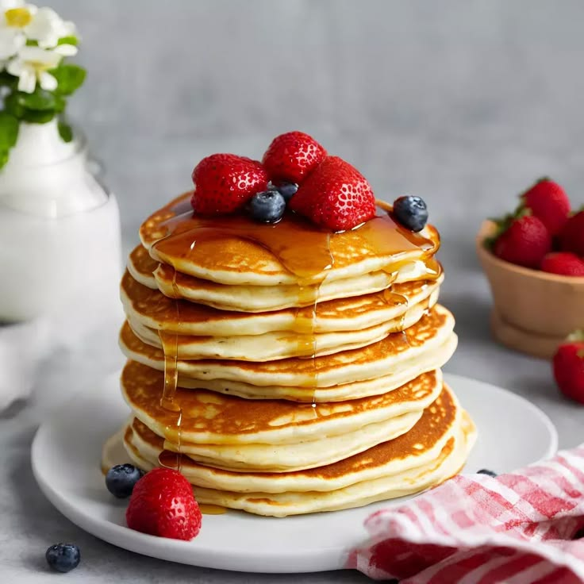

Pancakes

Description
These Fluffy Pancakes are absolutely perfect if you are
looking for a soft and thick pancake recipe. Just a hand-full of staple
ingredients and 5-minute prep for a delicious breakfast. Say goodbye to
the boxed pancake mix!
Ingredients
- 2 cups all-purpose Flour
- 4 Tbsp granulated Sugar
- 4 tsp Baking Powder
- 1/4 tsp Baking Soda
- 1/2 tsp Salt
- 1 3/4 cups Milk
- 4 Tbs Butter melted
- 2 tsp Vanilla Extract
- 1 large Egg
Method
- Combine the dry ingredients in a large-sized bowl.Make a well in the center and add the milk, melted butter, vanilla and egg.
- Whisk the ingredients together until smooth (some lumps are fine). The batter will be thick. If it's too thick for your liking, you can always add more milk to get a smoother consistency.
- Heat a nonstick pan or griddle over medium-low heat coated with butter to grease the pan. Pour ¼ cup of batter onto the pan smooth out gently into a round shape with the back of the measuring cup.
- When the underside looks golden and bubbles begin to appear on the top, flip with a spatula and cook on the other side until golden. Repeat with remaining batter. Serve with maple syrup, honey or fruit and enjoy!